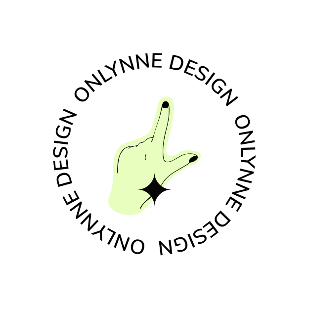
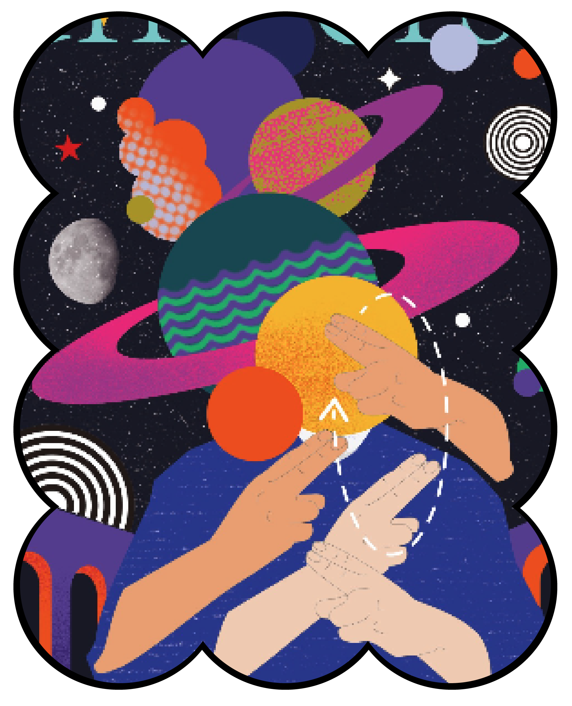
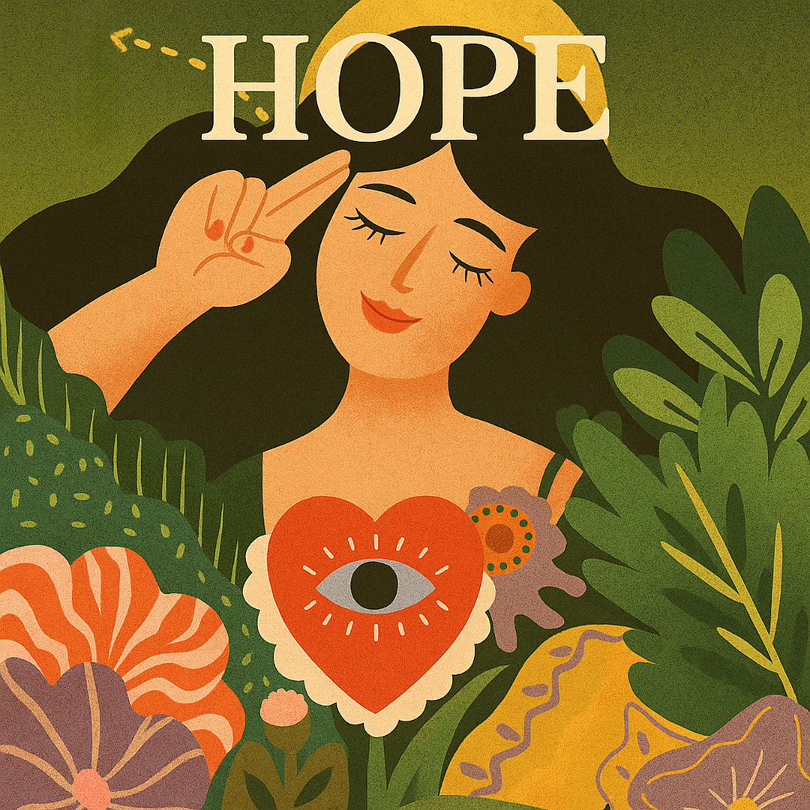
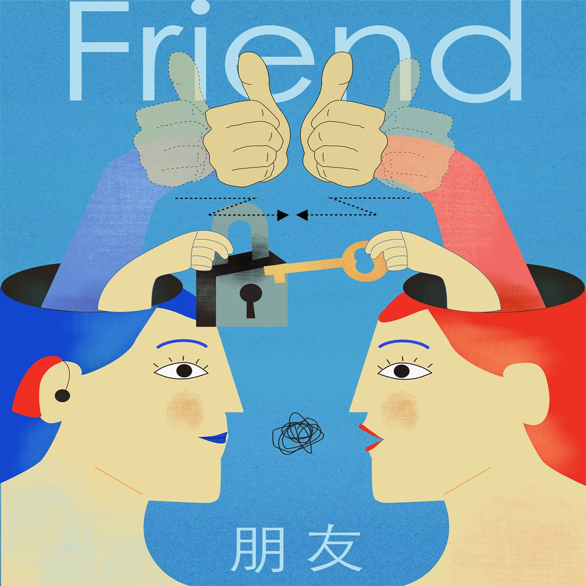
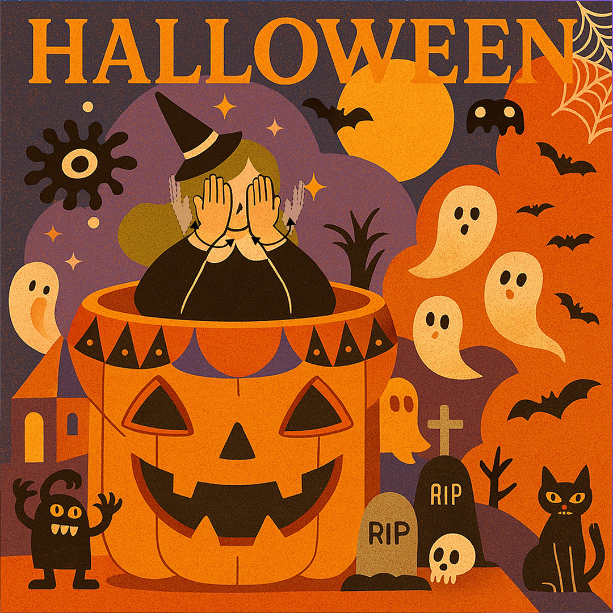
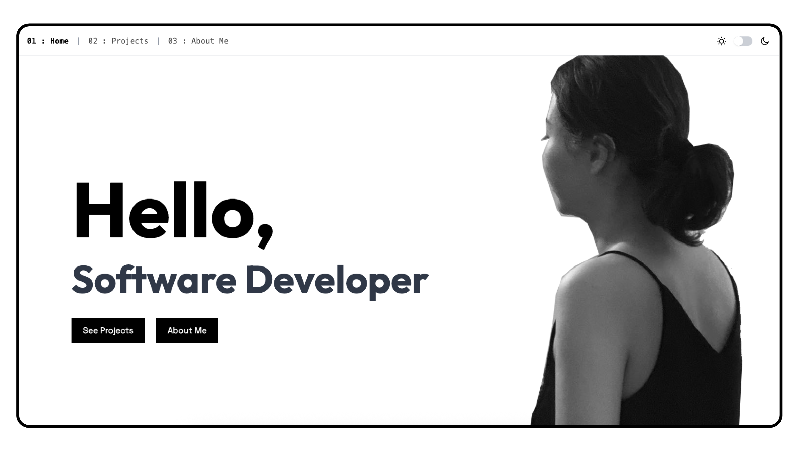

A showcase of my most impactful design work. Each project highlights problem-solving through creativity, accessibility, and storytelling, reflecting both craft and purpose.
branding | food
branding | coffee
branding | bakery
branding+packaging | Coffee
branding+packaging | restaurant
branding | hotel
Visual stories rooted in Deaf culture. My illustrations celebrate sign language, identity, and community, bridging cultures with expressive and inclusive art.




Where design meets code. From interactive websites to creative prototypes, I bring ideas to life through clean, responsive, and accessible front-end development.

Sign Mapping is an American Sign Language (ASL) learning app that helps users learn sign language in an engaging way...